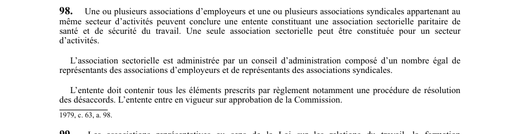

art-98-LSST : constitution d'association sectorielle paritaire
Un article du wiki ⚖️ Recueil législatif
En bref
Des associations d'employeurs et syndicales d'un même secteur peuvent conclure une entente constituant une association sectorielle paritaire de santé et de sécurité du travail. Il s'agit d'une obligation.
- Une seule association par secteur.
- Entente approuvée par la Commission.
🌐 LegisQuébec · 📄 PDF officiel (page 29)
Texte officiel : capture du PDF

Toucher l'image pour l'agrandir🔗 Ouvrir a cette page : LSST.pdf : page 29 · texte a jour au 26 mars 2024
Voir aussi
- art. 96 : représentant réputé au travail · le représentant à la prévention est réputé être au travail lorsqu'il exerce les fonctions qui lui sont dévolues.
- art. 97 : protection représentant prévention · faculté : l'employeur ne peut congédier, suspendre ou déplacer le représentant à la prévention ni lui imposer des mesures discriminatoires ou des représailles pour le motif qu'il exerce ses fonctions; toutefois, une sanction demeure possible en cas d'abus.
- art. 99 : association sectorielle de la construction · les associations représentatives et l'Association des entrepreneurs en construction du Québec concluent une entente constituant l'association sectorielle paritaire de la construction; en l'absence d'entente, la Commission en établit les termes.
- art. 99.1 : personnalité morale de l'association sectorielle · une association sectorielle est une personne morale.
- 🔧 Modifié par : LMRSST · Article modificateur de la LMRSST.
- ↑ Loi : LSST
Pages qui pointent ici (10)
- art-168-LMRSST : modifie l'art. 98 LSST Recueil législatif
- art-169-LMRSST : insertion après art. 100 LSST Recueil législatif
- art-96-LSST : représentant réputé au travail Recueil législatif
- art-97-LSST : protection représentant prévention Recueil législatif
- art-99-LSST : association sectorielle de la construction Recueil législatif
- art-99.1-LSST : personnalité morale de l'association sectorielle Recueil législatif
- Comité SST Recueil législatif
- LSST Recueil législatif
- LSST : Chapitre V : Comité de santé et de sécurité Recueil législatif
- LSST, droits et obligations Droit du travail